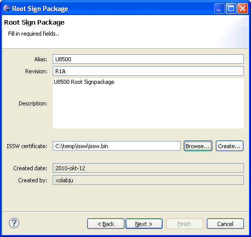
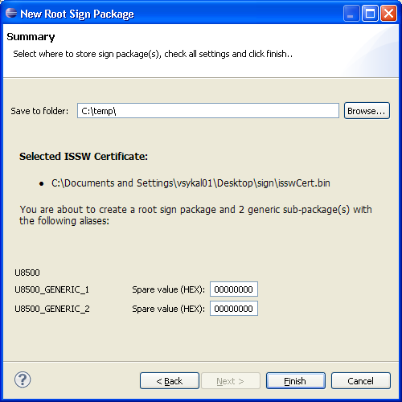

How to create a root sign package for the U5500/U8500/M7400/L9540 platforms
A root sign package is a container that is used by the
Sign Server to determine which key and certificate to use when signing U5500/U8500/M7400/L9540 software.
Pre-requisites
Please make sure that you have access to a ISSW certificate
Instructions
Open the Root Sign Package Wizard by completing
the following steps:
- In the Eclipse menu, select File -> New > Other... (or
press Ctrl+N)
- Expand the Flash Kit category to make the Sign Packages
category visible
- Expand the Sign Packages category to see the Root Sign Package
- Select the Root Sign Package and press Next
The first page will appear and the user must fill in the
correct values in order create the sign package

Required Fields:
- Alias: The name of the sign package. This is used as input
when signing software using the sign tool
- Revision: The sign package revision
- Description: The sign package description
- ISSW Certificate: The certificate to include in the
sign package. For each customer key included in the ISSW certificate, a sub sign package will be created.
The root sign package, aswell as the sub packages, shall be placed on the Sign Server and mapped to the correct keys
according to the Sign Server Administrator Guide. The root key shall be mapped to the root sign package, the first customer key to the first generic sub package etc.
When signing software, the root sign package shall be specified as sign package. The signing module will automatically detect which sign package and key to use for the signing.
On page 2 you must specify where to create the sign packages:

A summary of which packages that will be created is shown. For sub-packages you can edit spare number in hexadecimal format.